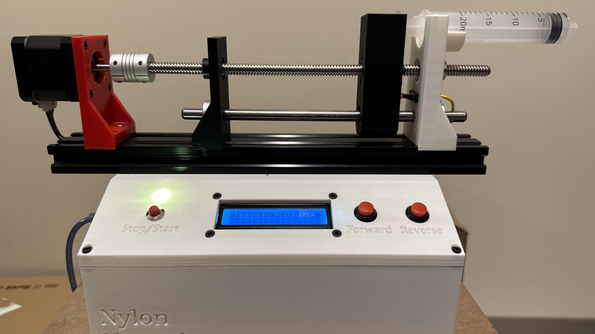

Syringe Pump
Overview
This syringe pump project is designed to deliver precise volumes of liquid at controlled flow rates using a lead screw mechanism powered by a stepper motor. It is an affordable alternative to commercial syringe pumps, utilizing 3D-printed components and Arduino-based electronics. Applications include laboratory microfluidics and clinical infusion scenarios.
